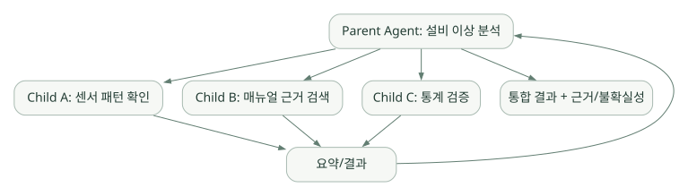

구현과 운영 / 단원 07
위임과 메시지 운영 이해하기
별도의 Context를 가진 자식 Agent와 세션을 연결하는 입력 계층
먼저 연결해 보기
한 모델 응답에서 여러 도구를 병렬로 호출하는 것과, 별도의 Agent에게 과제를 맡기는 것은 다릅니다. delegate_task로 만든 자식은 별도 Task와 Context를 가지고 작업하며, 부모는 결과를 통합합니다. 병렬화의 이점과 함께 비용·근거 통합·권한 범위도 늘어납니다.
Gateway는 다른 질문을 해결합니다. 메신저나 API에서 들어온 요청이 어느 사용자와 세션에 속하는지 연결하는 입력·운영 계층입니다. 모델 API를 중개하는 LLM Gateway와 구분하세요. Session, Profile, Cron도 이 실행 경계를 기준으로 읽으면 관계가 선명해집니다.
읽는 관점누가 별도 Context를 가지는지, 누가 사용자를 승인하고 세션을 선택하는지 찾아보세요.
13. Subagent·Gateway·Session·Automation#
13.1 delegate_task: Child Agent 위임#
delegate_task는 새로운 AIAgent 인스턴스를 생성해 별도 Task와 Context로 작업시키며, 자식의 최종 요약을 부모에게 전달한다. 공식 문서는 도구 접근의 상속/제한과 독립 터미널 세션을 설명한다. 작업 배열을 통해 병렬 위임할 수 있고 자식 출력에 output_schema를 부여해 구조 검증도 가능하다. S14
넓은 도식은 가로로 스크롤하여 읽을 수 있습니다.

[개념도] 원문의 연결 관계를 보존해 다시 배치했습니다. 실제 구현의 모든 호출·보안 경계를 표시한 그림은 아닙니다. 도식 크게 보기 ↗
연결 관계 원문 (Mermaid)
flowchart TD
P[Parent Agent: 설비 이상 분석] --> A[Child A: 센서 패턴 확인]
P --> B[Child B: 매뉴얼 근거 검색]
P --> C[Child C: 통계 검증]
A --> O[요약/결과]
B --> O
C --> O
O --> P
P --> R[통합 결과 + 근거/불확실성]장점: 작업 분리·병렬 탐색·부모 Context 절약. 단점: API 비용·지연·결과 불일치·책임소재·권한 범위 증가. 멀티에이전트가 단일 Agent보다 정확하다는 보장은 없다.
13.2 게이트웨이: 모델의 입력이 아니라 메시지 운영 계층#
메신저 플랫폼 이벤트가 들어오면 Adapter가 이를 표준 이벤트로 만들고, Gateway Runner가 사용자를 승인하고 세션 키를 찾은 뒤 AIAgent를 호출한다. 결과는 원래 플랫폼으로 전달한다. S02
Telegram/Discord/API request
→ platform adapter
→ authorize / session routing
→ AIAgent.run_conversation()
→ response / callbacks
→ platform delivery여기서 Gateway는 사용자 메시지 전달과 인증·세션 라우팅을 다루는 구성요소이고, LLM Gateway(모델 API에 대한 프록시/라우터)와 다른 개념이다. 사내 LLM Gateway를 연결하는 문제는 앞의 Provider 설정에서 다룬다.
13.3 Session 저장과 검색#
공식 세션 문서는 state.db와 SQLite 기반 메시지·메타데이터 보존, FTS5 검색을 설명한다. 최신 아키텍처에서는 동일 프로필의 여러 UI/클라이언트가 임의로 DB를 동시에 수정하는 것이 아니라, Gateway의 세션 소유권·접속 경로를 통해 관리하는 제약을 강조한다. 과거 JSONL 기반 세션 구조를 최신 기본 구조로 착각하면 안 된다. S07
- Session: 대화의 정체성과 연속성을 유지
- Transcript: 실제 대화·Tool Result의 시간 순 기록
- State: 진행 중 작업, 실행환경, 모델 선택 등 실행상 필요한 상태
- Compression lineage: 압축 전후의 세션·메시지 연결 이력
- Profile: 설정·기억·세션 등을 분리하는 사용자/Agent 경계
13.4 Cron 작업과 상시 운영#
Cron은 일정에 따라 명령을 실행시키는 것이 아니라 새 Agent 작업을 기동하고 결과를 전달할 수 있는 실행 입구다. 정기적인 비민감 상태 요약에는 유용하지만, 모니터링 실패, 알림 중복, 권한, 무인 승인 정책 및 작업 재시도 등을 설계해야 한다. S02
13.5 외부 애플리케이션에서 Hermes를 호출할 방법#
공식 Programmatic Integration 문서 S17:
| 방식 | 연결 형태 | 대표 사용 상황 |
|---|---|---|
| ACP | stdio JSON-RPC | IDE/편집기 통합 |
| TUI Gateway | JSON-RPC / WebSocket | 별도 UI의 세션 제어·승인·스트리밍 |
| API Server | HTTP / SSE | 서버 앱, 웹 UI, CI·자동화 연동 |
API Server에는 OpenAI 호환 POST /v1/chat/completions, /v1/responses 외에 실행 관리형 /v1/runs 계열 엔드포인트도 문서화되어 있다. 예를 들어 웹 서버가 Hermes를 호출하고 싶다면 API Server를 통한 통합이 검토 후보가 된다. 다만 세션/승인 기능을 사용하기 위해 실제 지원하는 엔드포인트와 인증 정책을 맞춰야 한다.